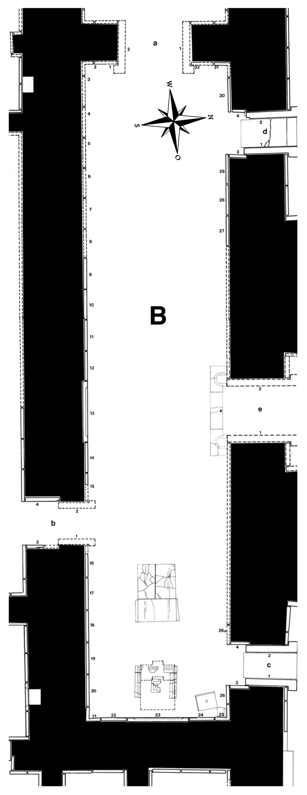

Room B
Room B (10 × 47 m) was the throne room, and main reception room of the Northwest Palace. It was first excavated and described by Layard and in the 20th century re-excavated by Mallowan in the ’50s and by Abu es-Soof in the ’60s.
Layard discovered 33 relief slabs (B-1 – B-32 plus B-26a, found re-used in the Temple of Nabu); the reliefs from the middle part of the northern wall were already missing in Layard’s time, so no attempt could be made to reconstruct them. Going by the average measurements of the slabs, about 10-11 are missing in this area.
Layard sent most of the reliefs he found to England; at least one entire slab (B-1), but in particular smaller fragments were given to various private individuals and institutions, while some that were found in a badly damaged state remained, at least partially, in situ. Only the important relief B-23, situated directly behind the throne pedestal, was, despite its poor condition, taken to the British Museum.
To reduce weight and to facilitate transportation, slabs with two registers were sawed into three horizontal strips, and the middle piece containing the standard inscription was discarded. Contrary to his procedure in all other rooms, Layard counted the reliefs in the throne room from right to left.
Click on B in the middle of the room to see all panels positioned in their respective walls, or on the individual panels along the inner walls and in the entryways to go to CDLI pages associated with them.
 |
Relief Slabs by Collection (duplication results from individual fragments in different places)
Ashmolean Museum, Oxford, UK |